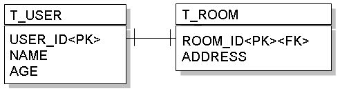
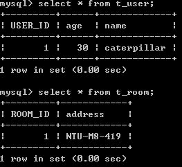

接續前一個主題 一對一（外鍵關聯），您可以讓T_USER與T_ROOM的主鍵共享來實作一對一對應，例如：

物件上若要完成這樣的對應資訊，則可以使用@PrimaryKeyJoinColumn標註，例如：
- User.java
package onlyfun.caterpillar;
...
@Entity
@Table(name="T_USER")
public class User implements Serializable {
@Id
@GeneratedValue(strategy = GenerationType.AUTO)
@Column(name="USER_ID")
private Long id;
private String name;
private Long age;
@OneToOne(cascade=CascadeType.ALL)
@PrimaryKeyJoinColumn
private Room room;
// 以下為 Getter、Setter
}Room類別無需作改變，若依 一對一（外鍵關聯）中的儲存範例，則會先儲存User，取得主鍵值之後，再儲存Room，讓User與Room的主鍵值相同，一個資料儲存後的表格狀態如下所示：

而查詢時，會使用LEFT OUTER JOIN的方式結合表格進行查詢，例如以下的陳述：
User user = entityManager.find(User.class, new Long(1));
以Hibernate作為JPA的實作，會產生以下的SQL語句：
Hibernate:
select
user0_.USER_ID as USER1_0_1_,
user0_.age as age0_1_,
user0_.name as name0_1_,
room1_.ROOM_ID as ROOM1_1_0_,
room1_.address as address1_0_
from
T_USER user0_
left outer join
T_ROOM room1_
on user0_.USER_ID=room1_.ROOM_ID
where
user0_.USER_ID=?
select
user0_.USER_ID as USER1_0_1_,
user0_.age as age0_1_,
user0_.name as name0_1_,
room1_.ROOM_ID as ROOM1_1_0_,
room1_.address as address1_0_
from
T_USER user0_
left outer join
T_ROOM room1_
on user0_.USER_ID=room1_.ROOM_ID
where
user0_.USER_ID=?